Why this analysis exists
UIDAI asked participants to find meaningful patterns in official Aadhaar transaction data. This work asks three operational questions: where child enrolment lags, when enrolment centres are under-used, and which districts absorb disproportionate load. Findings are validated with statistical tests and turned into recommendations (weekend service pilots, North-East mobile drives, hotspot capacity).
Priority findings
- Child enrolment in several North-East states is 19–29% versus ~65% nationally.
- Saturday volume is ~62% lower than weekday peaks — roughly 270k extra enrolments per month if weekend service is added in metros.
- Fifteen districts handle 17% of enrolments (about 93/day vs a 60/day target).
- Biometric updates outpace demographic updates (~1.4:1), a signal of rework and device quality issues.
Charts
Static 300 DPI figures from the analysis pipeline. Click any card to open the full image.


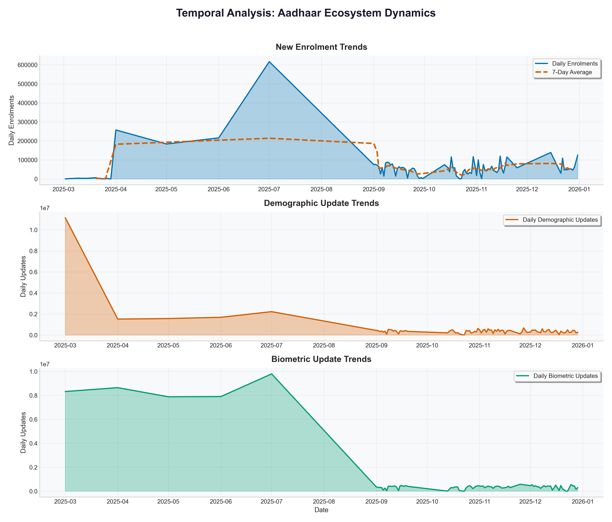

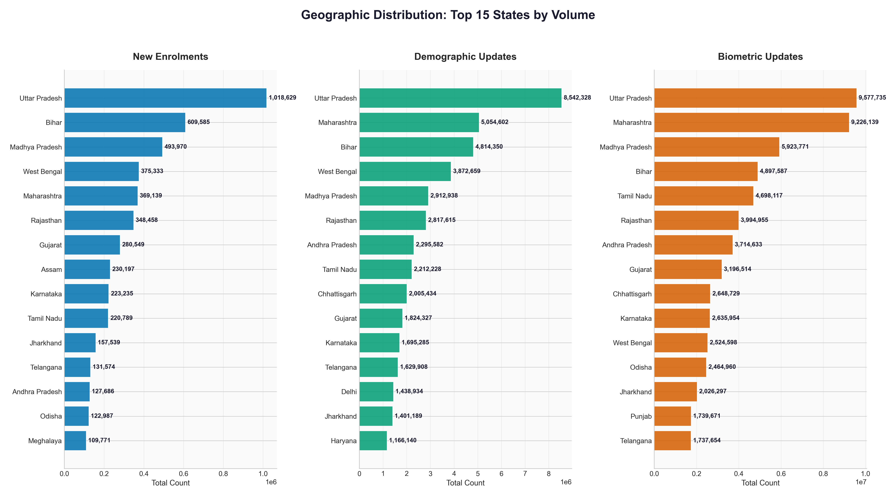

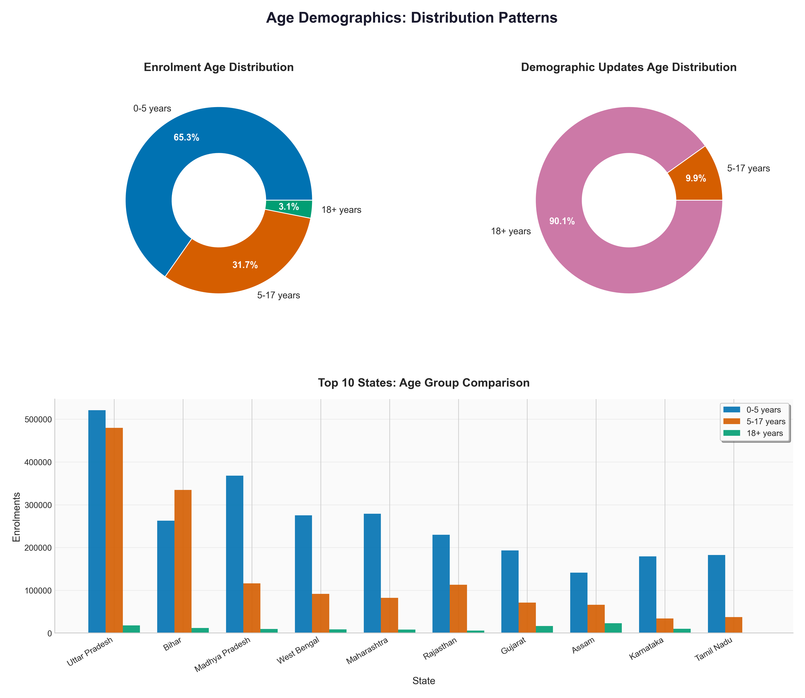

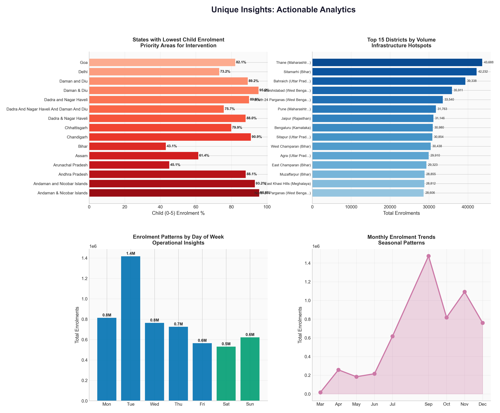

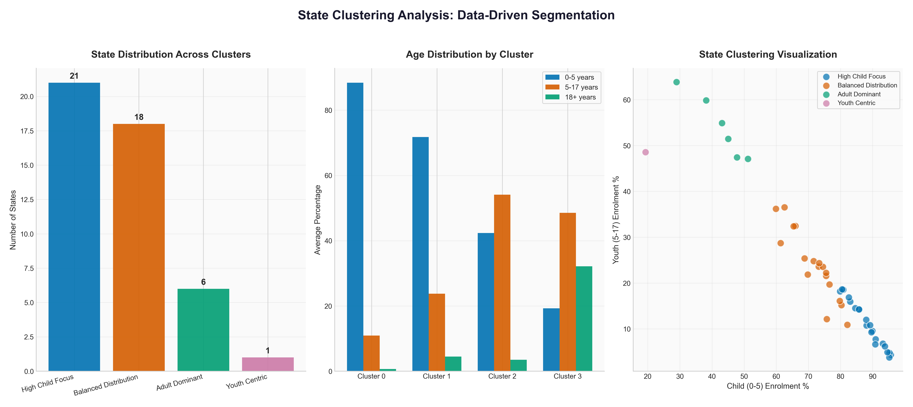

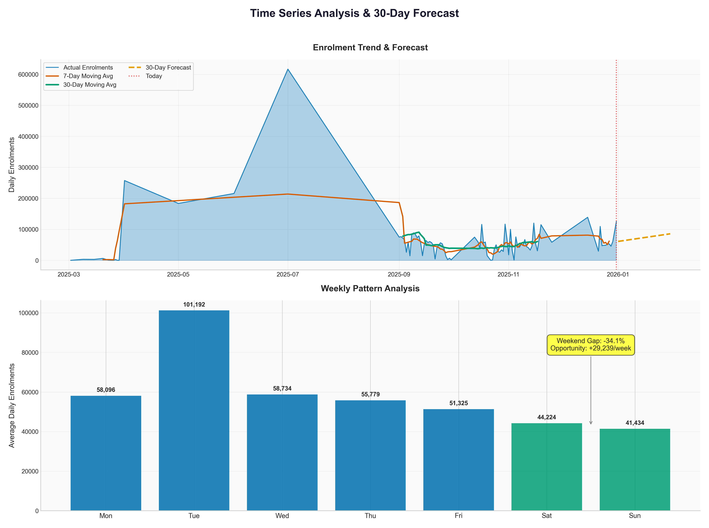

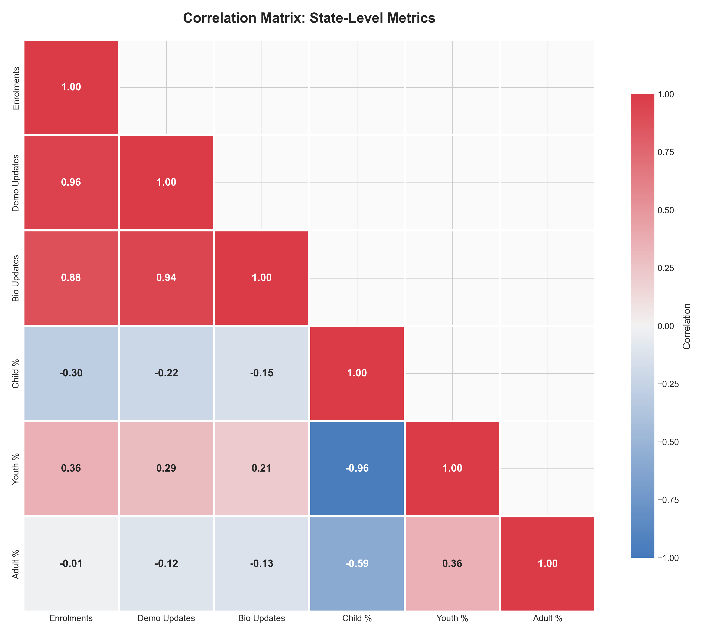

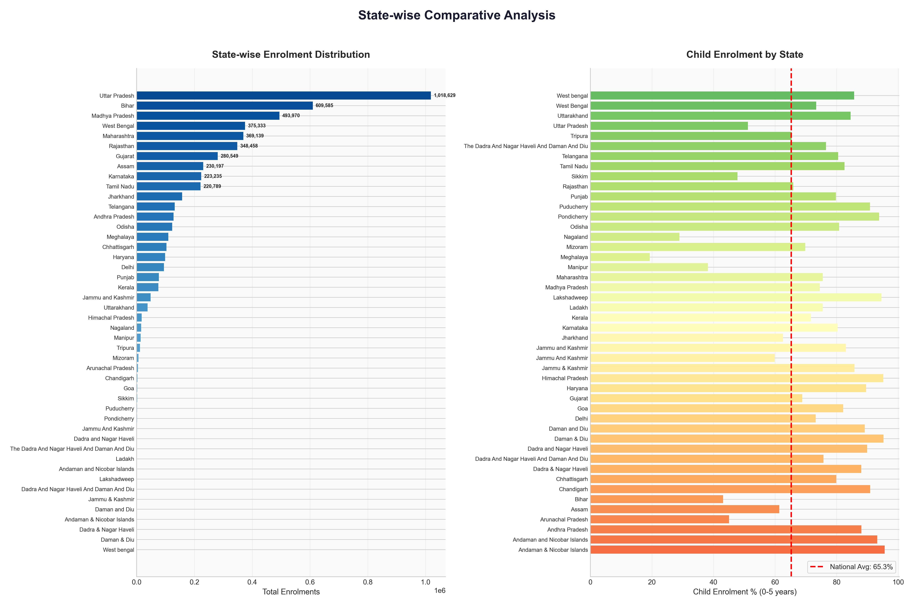

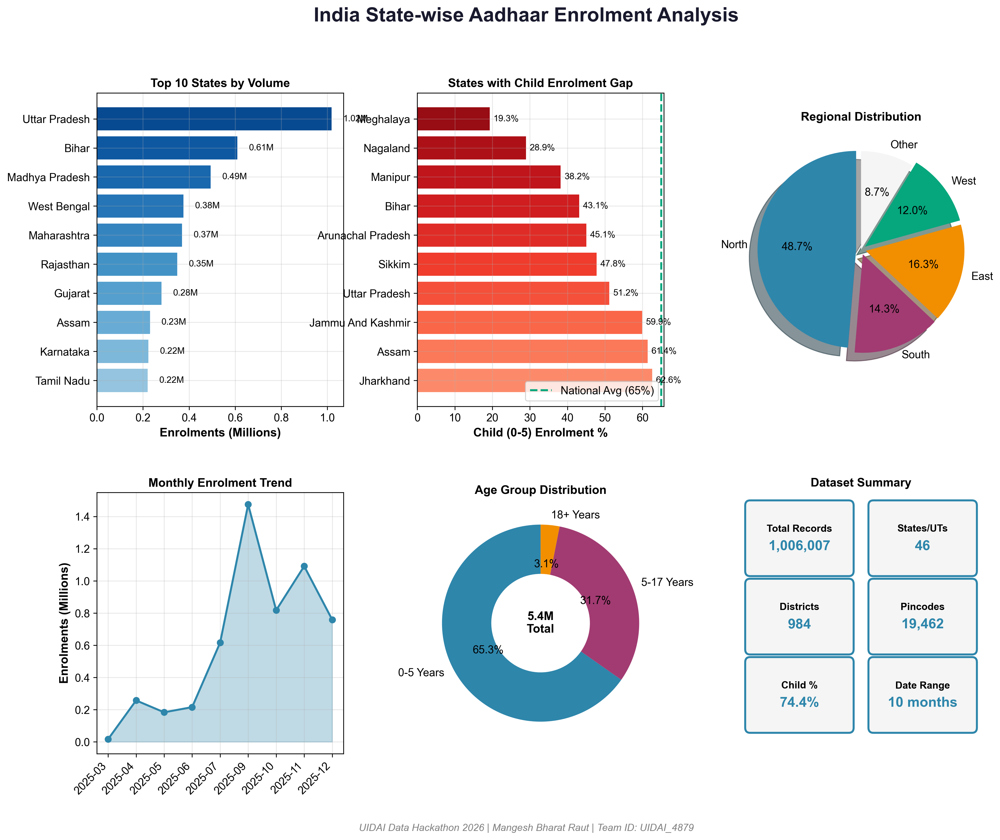

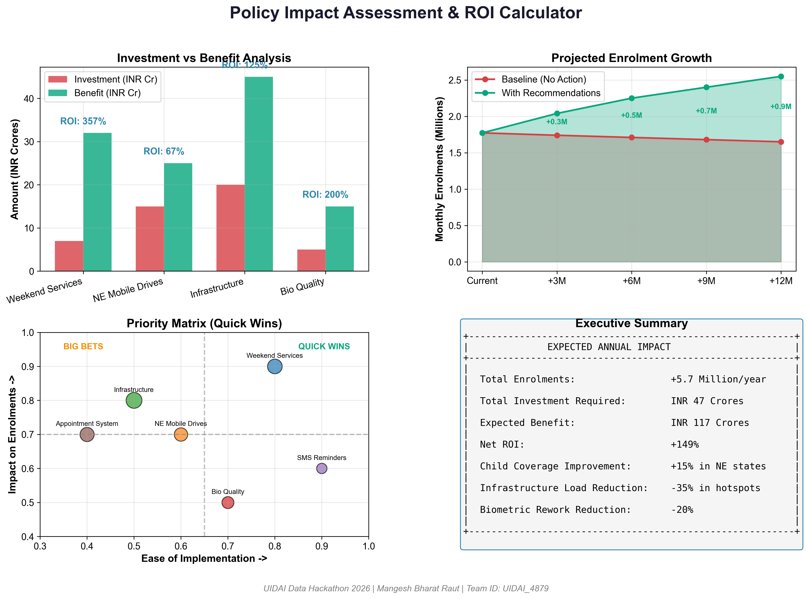

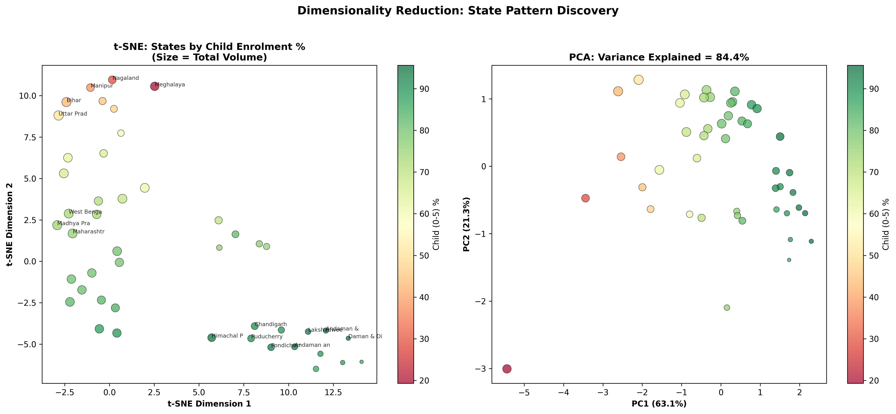

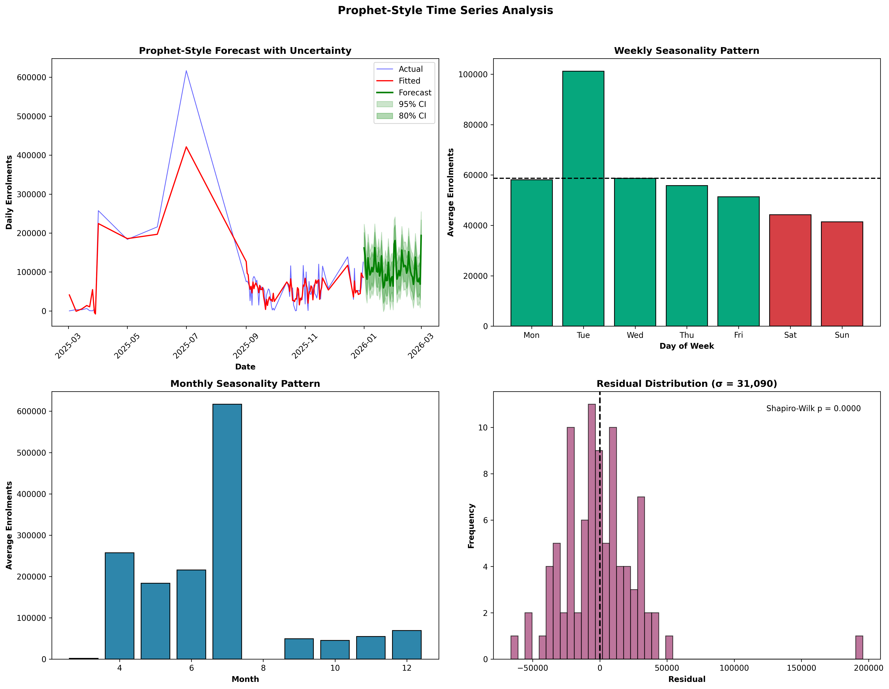

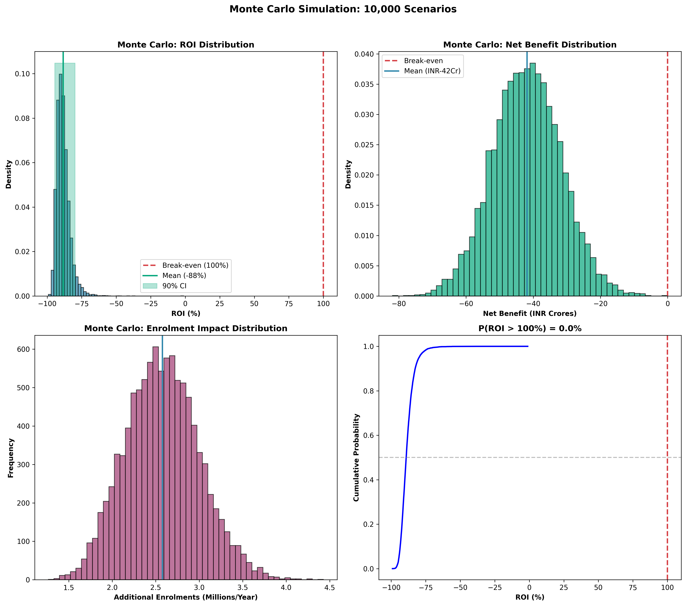
Reports and interactive views
Interactive dashboard
Plotly views of temporal, geographic, and demographic structure.
Open dashboard →Full analysis report
Hackathon write-up: methods, tests, visuals, and recommendations.
Download PDF →